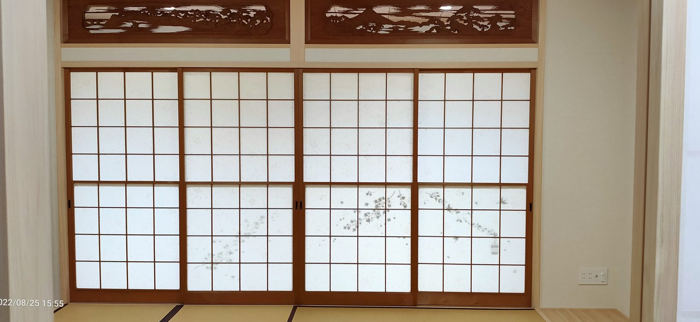
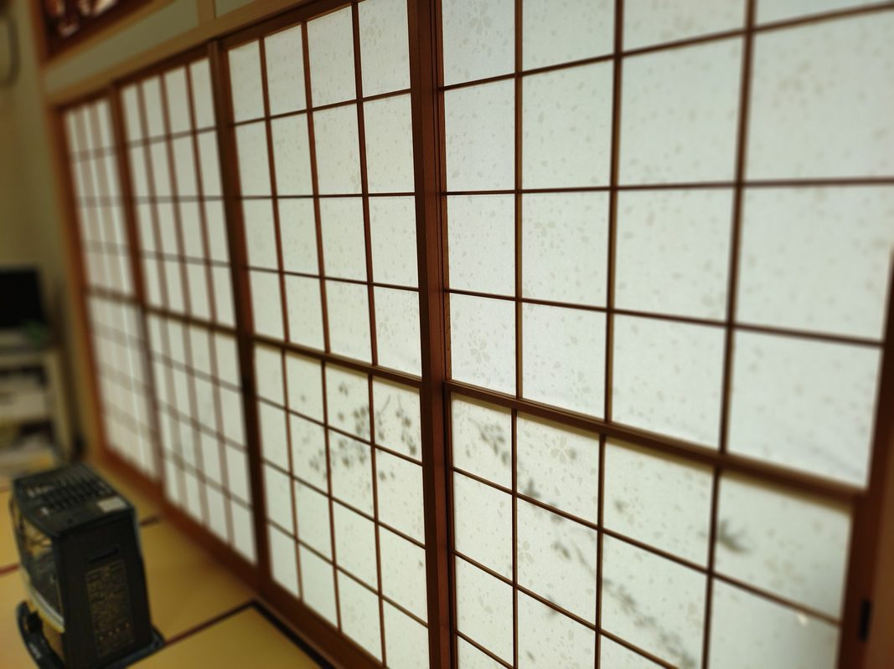
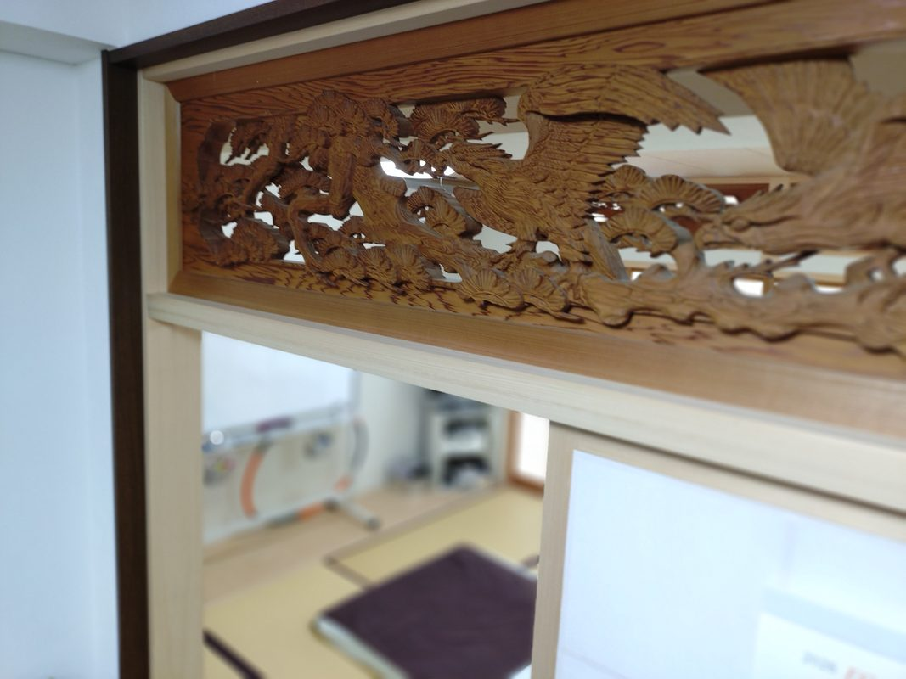
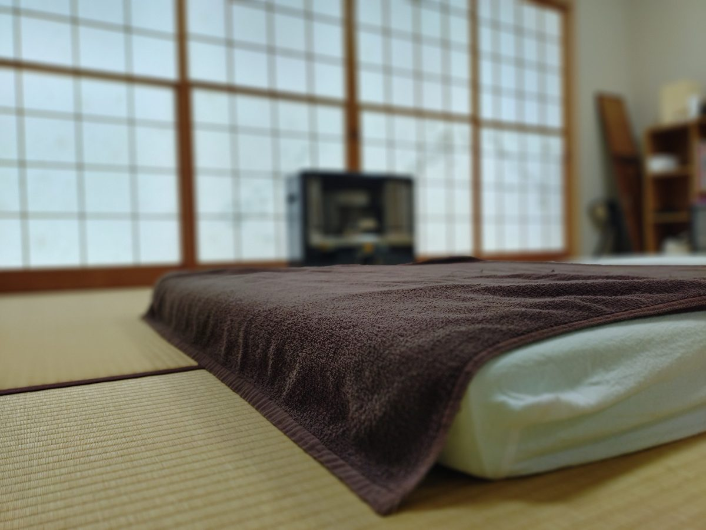
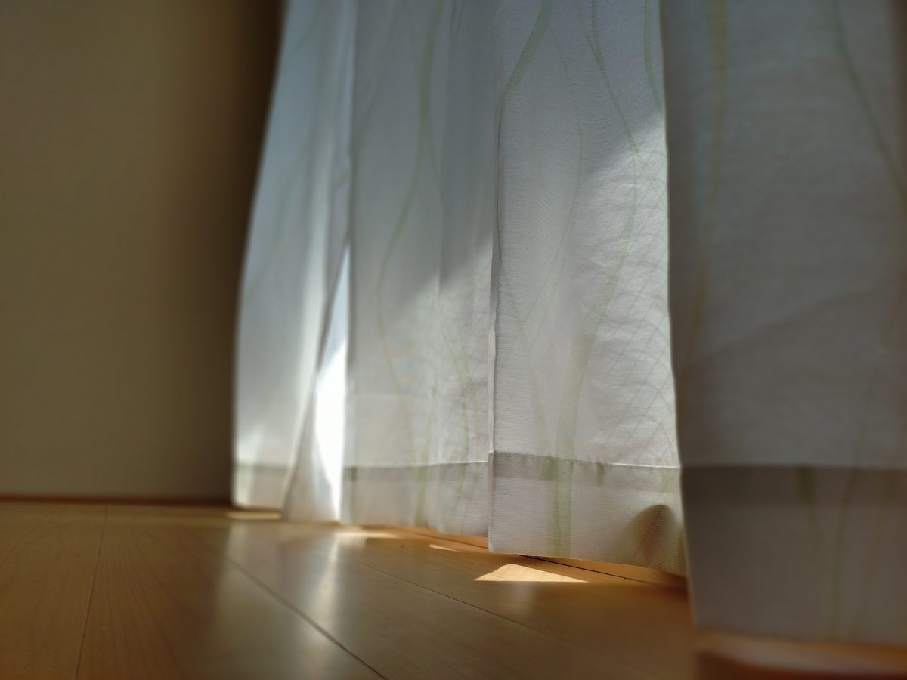
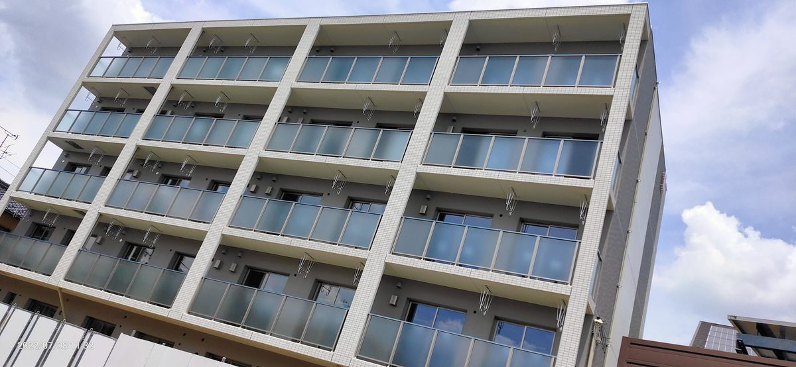

Journal
ひだまりの日常
{% for post in site.posts limit:3 %}
 {% endfor %}
{% endfor %}
{{ post.title }}
身体の痛みや辛さを話してください。
「若々しく！元気に！楽しく！」を理念に、
カイロプラクティックを通じて
あなたの健康をサポートします。



和紙で織られた特殊な畳と障子と縁側がある和室で、
おばあちゃんの家にいるような
落ち着きの別世界で施術を受けられます。
縁側から光が差し込み、夏は涼しい風が吹き、冬は縁側の暖かさを感じられる施術空間。患者様の心も身体も癒します。
小さなお子様や子育て中のママさんにも安心。足の悪いご高齢の方でも安心してお越しいただけます。
「将来への不安・自身の身体・家族の健康への思い」からカイロプラクティックの道へ。平成22年1月より小牧市にて施術活動を続けています。
「若々しく！元気に！楽しく！」を理念に、地域の皆様の健康をサポートいたします。



| 院名 | カイロプラクティック ひだまり |
|---|---|
| 院長 | 小川 健一 |
| 住所 | 〒485-0023 愛知県小牧市北外山1456-3 ひだまりマンション101号室 |
| 電話 | 080-5247-3547 |
| 営業時間 | 10:00〜22:00（完全予約制） |
| 最寄駅 | 名鉄小牧線「間内駅」徒歩約5分 |
| 駐車場 | 2台完備（南側C・D） |
| 決済 | カード払いOK |
| SNS | LINE公式 ／ Instagram ／ Facebook |